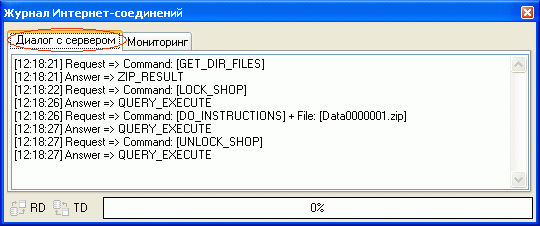
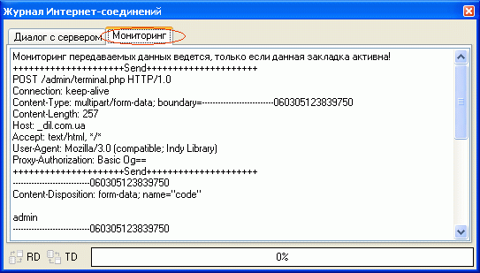

Окно журнала интернет-соединений вызывается из главного окна "Магазин - Сервер - Журнал", содержит две закладки и предназначено специалистам для просмотра и анализа логов соединений.
Закладка "Диалог с сервером" отображает ход передачи служебных команд между windows-программой и скриптами комплекса Melbis Shop.

В окне закладки "Мониторинг" отслеживаются низкоуровневые команды обмена, которые используются при настройке подключения компьютера с установленной программой Melbis Shop к серверу. Мониторинг передаваемых данных ведется, только если данная закладка активна!
